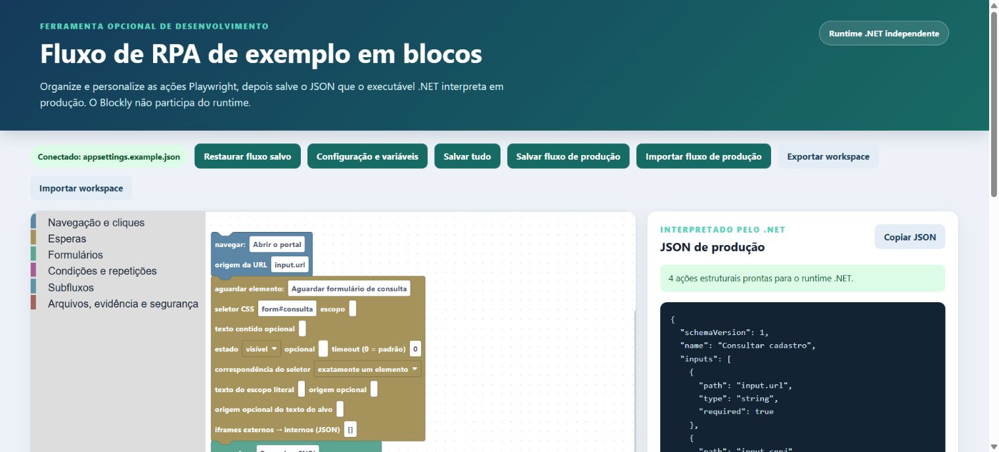

Vou criar um RPA agora
Leia Visão geral, Primeiro RPA, Dados, Seletores e depois consulte somente os blocos que usar.
Ir ao passo a passoEste guia apresenta a arquitetura da base, o vocabulário usado no projeto e os procedimentos para criar e manter RPAs. Escolha abaixo o caminho que corresponde ao que precisa fazer agora.
Use este manual como tutorial e como consulta. Para montar um RPA comum, comece pelo fluxo local. Banco, worker e código interno entram depois, quando forem necessários.
Leia Visão geral, Primeiro RPA, Dados, Seletores e depois consulte somente os blocos que usar.
Ir ao passo a passoPesquise o nome do bloco no topo da página. Cada ficha explica o comportamento, um exemplo realista, todos os campos e como conferir o resultado.
Abrir o catálogoPrimeiro faça um caso funcionar localmente. Em seguida, prepare o banco, configure o worker, escolha os resultados que serão gravados e valide a execução em lote com segurança.
Entender o workerEssa é a parte avançada. Leia Adicionar um bloco apenas quando nenhum dos 36 blocos existentes resolver a necessidade.
Ir à parte avançadaPense no RPA como uma receita. No Blockly, você organiza visualmente os ingredientes e os passos. O arquivo flow.production.json guarda a receita escrita. O runtime .NET é o cozinheiro: confere os dados recebidos, lê a receita na ordem e realiza cada instrução. Nas ações web, ele trabalha com o CloakBrowser ou com outro navegador compatível pelas interfaces do Playwright.
Na biblioteca à esquerda, você encontra as categorias de ações. No centro, encaixa e configura os blocos. À direita, acompanha o JSON de produção que será salvo. A tela abaixo é uma captura real do editor desta base com um fluxo de exemplo.

Ao salvar, o editor converte os blocos para JSON schema 1. O recorte abaixo corresponde ao fluxo mostrado na tela: a ordem visual vira a ordem do array actions, e cada configuração do bloco vira uma propriedade editável.
{
"schemaVersion": 1,
"name": "Consultar cadastro",
"actions": [
{
"id": "abrir-portal",
"type": "navigate",
"name": "Abrir o portal",
"valueSource": "input.url"
},
{
"id": "aguardar-consulta",
"type": "wait",
"name": "Aguardar formulário de consulta",
"selector": "form#consulta",
"state": "visible",
"optional": false,
"matchMode": "single"
},
{
"id": "preencher-cnpj",
"type": "fill",
"name": "Preencher CNPJ",
"selector": "input[name='cnpj']",
"valueSource": "input.cnpj"
},
{
"id": "registrar-evidencia",
"type": "screenshot",
"name": "Registrar formulário preenchido",
"fileName": "consulta-preenchida.png",
"separateByExecution": true,
"conflictStrategy": "unique",
"target": "runtime.evidencia"
}
],
"subflows": {}
}Você normalmente não escreve um interpretador do zero. O gerador copia um Program.cs pronto do template. O trecho central carrega o JSON validado, monta os dados isolados do caso e entrega tudo ao executor compartilhado:
var flow = await new JsonFlowLoader()
.LoadAsync(flowPath, cancellationSource.Token);
var request = new FlowExecutionRequest(
Guid.NewGuid().ToString("N"),
CloneObject(configuration["Input"]),
CloneObject(configuration["Blockly"]?["Variables"]),
CloneObject(configuration["Attachments"]));
IFlowExecutor executor = new PlaywrightFlowExecutor(flow, options);
var result = await executor.ExecuteAsync(
request,
cancellationSource.Token);Para mudar a sequência, os seletores ou os valores, edite os blocos. O C# cresce apenas quando surge uma capacidade genérica que ainda não existe, como um novo tipo de integração.
O CloakBrowser é a opção stealth padrão da base. O BrowserLauncher inicia o binário público fixado e expõe o navegador pela interface IBrowser do Microsoft Playwright. Assim, os mesmos handlers de clique, preenchimento, espera, download e screenshot funcionam sem mudar o fluxo. Chromium, Firefox, WebKit, Chrome e Edge também continuam disponíveis para teste e homologação.
{
"Runtime": {
"Browser": "cloakbrowser",
"Headless": false
}
}A compatibilidade é concreta no código: o projeto referencia CloakBrowser e Microsoft.Playwright, e o launcher devolve CloakBrowserHandle.RawBrowser como IBrowser.
Quando chegar a hora de executar em lote, configure uma definição do RPA no worker. Ele chama ClaimNextAsync para escolher e reservar atomicamente um item, monta um FlowExecutionRequest isolado, executa o mesmo JSON e grava resultados e artefatos. O fluxo Blockly começa somente depois de receber o caso; ele nunca escolhe o próximo item da fila.
var workItem = await repository.ClaimNextAsync(cancellationToken);
if (workItem is not null)
{
await processor.ProcessAsync(workItem, cancellationToken);
}
// Dentro do processor:
var request = new FlowExecutionRequest(
executionId,
input,
configuration,
attachments,
workItem.WorkItemId.ToString("D"),
workItem.BatchId);flow.production.jsonguarda a receitaFlowExecutionRequestleva os dados do casoflow.production.json guarda somente o que o RPA deve fazer. Produção executa apenas o segundo.Você encontrará estes nomes no código e nas configurações. A coluna do meio explica o significado prático; a última mostra onde aparece.
| Termo | O que significa | Exemplo nesta base |
|---|---|---|
| Ação | Um passo executável do roteiro. | Clicar, preencher, aguardar ou baixar. |
| Bloco | A representação visual de uma ação no Blockly. | O bloco “Anexar arquivo”. |
| Runtime / interpretador | O código .NET que lê o JSON e executa as ações. | RpaFlow.Runtime e RpaFlow.Playwright. |
| Handler | Trecho de C# responsável por executar um tipo de ação. | O handler de clique chama o Playwright. |
| Adapter / adaptador | Integração com uma tecnologia externa. | Interfaces Playwright com CloakBrowser por padrão; Microsoft Graph para e-mail. |
| Provider / provedor | Componente que fornece um serviço ao fluxo. | O provedor de OTP lê uma caixa de e-mail. |
| Alias | Nome curto que aponta para uma configuração protegida. | email-otp aponta para uma caixa configurada no worker. |
| Source / origem | Caminho de onde o bloco deve ler um valor. | input.cnpj ou attachments.notaPdf. |
| Target / destino | Caminho onde o bloco guarda um resultado temporário. | runtime.protocolo. |
| Contexto | Conjunto de dados disponível durante um caso. | input.*, config.* e runtime.*. |
| Seletor | Regra usada para encontrar um elemento na página. | button[data-action='save']. |
| Escopo | Parte da tela dentro da qual o seletor será procurado. | Procurar “Editar” somente dentro de uma linha da tabela. |
| Iframe | Página colocada dentro de outra página. | Antes de achar um campo, o RPA precisa entrar no iframe correto. |
| Timeout | Tempo máximo de espera antes de considerar falha. | Esperar no máximo 30 segundos por um botão. |
| Worker | Serviço que pega casos da fila e executa o RPA automaticamente. | Rpa.Worker. |
| Claim / reserva | Ato de marcar um item como sendo processado por um worker. | Impede dois serviços de pegarem a mesma nota. |
| Lease / prazo da reserva | Tempo durante o qual a reserva pertence ao worker. | Se o serviço morrer, outro poderá recuperar o item após o prazo. |
| Heartbeat | Renovação periódica que informa que o worker continua vivo. | Atualiza o prazo da reserva enquanto o caso está rodando. |
| Retry / nova tentativa | Recolocar um caso na fila depois de uma falha que pode ser temporária. | Tentar novamente após indisponibilidade do portal. |
| Artefato | Arquivo produzido ou coletado pelo RPA. | Screenshot, recibo ou relatório baixado. |
| Round-trip / ida e volta | Abrir um JSON no Blockly e salvá-lo novamente sem perder informação. | Teste automático do editor. |
| Modo seguro | Execução que para antes das ações cadastradas como irreversíveis. | SafeValidation. |
Use esta tabela quando precisar localizar um arquivo. Para criar um RPA comum, você trabalhará principalmente na pasta do próprio RPA, no Blockly e no flow.production.json. Não é necessário decorar o restante.
| Pasta | Para que serve | Você precisa mexer? |
|---|---|---|
rpas/NomeDoRpa | Seu fluxo, sua configuração e o pequeno programa que inicia a execução. | Sim. É o local normal de trabalho. |
src/RpaFlow.Contracts | Define quais ações e campos são aceitos no JSON e mostra erros de configuração. | Somente para criar ou mudar uma capacidade compartilhada. |
src/RpaFlow.Runtime | Guarda os dados de cada execução e interpreta ações que não dependem diretamente da página. | Normalmente não. |
src/RpaFlow.Playwright | Executa no navegador os cliques, preenchimentos, esperas, downloads e screenshots. | Somente quando um bloco web precisa ganhar comportamento novo. |
src/RpaFlow.Editor | Abre o Blockly localmente e converte blocos para JSON e JSON para blocos. | Somente ao alterar o editor ou um bloco. |
src/Rpa.Worker | Pega casos do banco, executa o fluxo e grava status, resultados e arquivos. | Para configurar execução em fila ou adicionar uma integração de infraestrutura. |
templates/rpa-web | Modelo copiado automaticamente quando você cria um RPA. | Altere apenas quando todo RPA novo deve receber a mesma melhoria. |
examples/RpaExemplo | Exemplo pequeno que compila e ajuda a conferir se a base está saudável. | Use para estudo; não coloque regra de um sistema real. |
database/sqlserver | Scripts para criar as tabelas de fila e histórico do worker. | Somente ao preparar o ambiente do worker. |
tests | Programas que verificam blocos, navegador, worker e abertura/salvamento do editor. | Execute sempre; altere quando mudar a base. |
docs | Este guia e as referências técnicas. | Atualize quando o comportamento mudar. |
Você consegue criar e testar um RPA local sem SQL Server e sem instalar o worker como serviço. Comece apenas com .NET, PowerShell e um navegador compatível.
A versão esperada fica em global.json. Confirme com dotnet --version.
CloakBrowser é o padrão da base. Os testes automáticos locais usam Chromium. Se o navegador não abrir, consulte a mensagem do Playwright sobre instalação.
Não é necessário para criar o fluxo, abrir o Blockly nem testar um caso local. Instale ou configure somente quando chegar à etapa do worker.
Os scripts de criação e validação foram feitos para PowerShell no Windows.
dotnet --version
dotnet build RpaBlockly.slnx
powershell -ExecutionPolicy Bypass -File .\tools\Validar-Base.ps1O objetivo desta primeira execução é simples: criar a pasta, abrir o fluxo no Blockly e validar o projeto sem acessar um sistema real. Depois disso, você substitui o exemplo pelo roteiro do portal.
O nome técnico vira pasta e projeto: use RpaContasPagar, sem espaço ou acento. O nome visível pode ser Contas a pagar. Essa separação evita problemas em caminhos e mantém a tela legível.
.\tools\Novo-Rpa.ps1 -Name RpaContasPagar -DisplayName "Contas a pagar"Resultado esperado: aparece a pasta rpas/RpaContasPagar, e o projeto é incluído em RpaBlockly.slnx.
Edite rpas/RpaContasPagar/appsettings.local.json. Coloque ali URL, usuário de teste, navegador e parâmetros que mudam por ambiente. Esse arquivo não entra no Git.
Não coloque senha no fluxo JSON. Segredos devem continuar na configuração local, variável de ambiente ou cofre.
dotnet build RpaBlockly.slnx
dotnet run --project rpas/RpaContasPagar/RpaContasPagar.csproj --no-build -- --validate-onlyResultado esperado: compilação sem erro e mensagem informando que o fluxo é válido. Se falhar aqui, corrija antes de testar o portal.
.\abrir-editor.cmd rpas\RpaContasPagarO comando inicia um pequeno servidor apenas no seu computador e abre o editor. Você deve ver o nome do RPA e os blocos do fluxo atual.
Comece com Navegar e Aguardar elemento. Teste. Depois adicione login. Teste novamente. Continue em pequenos grupos para saber exatamente qual alteração causou uma falha.
Depois de salvar, reabra o editor. Confira se todos os blocos, campos e conexões voltaram iguais. Isso comprova que o JSON contém tudo que a tela precisa.
Use navegador visível durante o desenvolvimento. Valide seletores e dados até o ponto autorizado. Enviar, confirmar, cadastrar, excluir ou pagar exige autorização explícita e proteção adequada.
O editor precisa saber quais arquivos pertencem ao RPA. Essa ligação fica em rpa.editor.json. O gerador cria esse arquivo automaticamente; normalmente você só altera a lista de campos que deseja editar pela tela.
Permite ao editor localizar a pasta correta e reconhecer o projeto .NET.
Guarda valores do ambiente local, como URL e parâmetros. Pode conter dados que não devem ir para o Git.
É o flow.production.json que contém a ordem e a configuração dos blocos.
{
"displayName": "Contas a pagar",
"projectFile": "RpaContasPagar.csproj",
"configurationFile": "appsettings.local.json",
"flowFile": "flow.production.json",
"configurationFields": [
{
"path": "Input.Url",
"label": "URL inicial",
"source": "input.url",
"type": "url"
}
]
}| Campo do perfil | Explicação |
|---|---|
displayName | Nome humano mostrado no topo do editor. |
projectFile | Nome do arquivo .csproj dentro da pasta do RPA. |
configurationFile | Arquivo que o formulário do editor abre e salva. Durante o desenvolvimento, aponte para appsettings.local.json, não para o exemplo versionado. |
flowFile | Nome do JSON executável. Na estrutura padrão é flow.production.json. |
configurationFields[].path | Local exato dentro do arquivo de configuração. Exemplo: Input.Url significa a propriedade Url dentro de Input. |
configurationFields[].label | Texto amigável mostrado para a pessoa no formulário. |
configurationFields[].source | Nome usado pelos blocos para ler o valor. Exemplo: o campo salvo em Input.Url fica disponível como input.url. |
configurationFields[].type | Define a forma de edição e validação: texto, URL, e-mail, senha, data, número, caixa de seleção ou lista de textos. |
configurationFields[].nullable | Use true somente quando a ausência do valor for válida. Não use para esconder um campo obrigatório ainda não configurado. |
--validate-only. Se um campo desaparecer depois de reabrir, não use esse campo em produção: a conversão entre Blockly e JSON ainda precisa ser corrigida.Em vez de colocar todos os valores diretamente nos blocos, você pode indicar um caminho. O começo do caminho informa de qual grupo o dado vem. Pense nesses grupos como objetos disponíveis durante a execução.
| Raiz | O que contém | Quem escreve | Exemplo |
|---|---|---|---|
input.* | Dados do caso atual, como CNPJ, número e datas. Os blocos podem ler, mas não alterar. | Execução local ou worker, antes do fluxo começar. | input.documentos[0].numero |
config.* | Parâmetros que valem para o RPA ou ambiente, mas não são resultado de um caso. | Arquivo de configuração ou worker. | config.unidadePadrao |
attachments.* | Caminhos dos arquivos que o caso trouxe para o RPA. | Execução local ou worker. | attachments.notaPdf |
runtime.* | Área temporária de trabalho. Os blocos guardam aqui protocolo, leituras, cálculos e caminhos produzidos. | Blocos durante a execução. | runtime.protocolo |
system.* | Identificadores criados pelo sistema para rastrear a execução e o item da fila. | Runtime ou worker. | system.workItemId |
loop.* | Item e posição atuais de um bloco Para cada item ou Repetir. | Interpretador, apenas enquanto o loop está ativo. | loop.documento.arquivos |
O Blockly não cria o caso. Ele apenas define o que fazer com os dados recebidos. Antes de o primeiro bloco rodar, o programa do RPA recebe um objeto chamado FlowExecutionRequest. A propriedade Input desse objeto passa a ser a raiz input.* usada pelos blocos.
Durante um teste local:
appsettings.local.json → seção Input → FlowExecutionRequest.Input → input.*
Quando o worker está em uso:
rpa.WorkItem.InputJson → FlowExecutionRequest.Input → input.*Esta é a forma mais simples durante o desenvolvimento. Abra o appsettings.local.json que fica na pasta do RPA e coloque o caso dentro da seção Input:
{
"Input": {
"url": "https://portal.exemplo/login",
"cnpj": "12345678000190",
"documentos": [
{ "numero": "NF-100", "valor": 150.75 }
]
}
}O Program.cs criado pelo gerador já lê essa seção. Em forma resumida, o código existente faz isto:
var request = new FlowExecutionRequest(
Guid.NewGuid().ToString("N"),
CloneObject(configuration["Input"]),
CloneObject(configuration["Blockly"]?["Variables"]),
CloneObject(configuration["Attachments"]));Você normalmente não precisa escrever esse trecho. Basta preencher Input no arquivo local e iniciar o projeto. O programa retira o objeto de dentro de Input e o entrega ao runtime.
Em produção, algum sistema precisa criar o item da fila. Pode ser uma API interna, uma integração, uma importação de planilha, uma procedure ou outro programa. A base não inventa os casos sozinha. Quem cria o item grava os dados na coluna InputJson da tabela rpa.WorkItem.
INSERT INTO rpa.WorkItem (RpaCode, InputJson)
VALUES (
N'contas-pagar',
N'{"url":"https://portal.exemplo/login","cnpj":"12345678000190","documentos":[{"numero":"NF-100","valor":150.75}]}'
);Nesse caso, grave em InputJson somente o objeto do caso. Não coloque outra propriedade Input ao redor dele. Quando o worker reserva a linha, ele converte o texto da coluna em objeto JSON e o entrega como FlowExecutionRequest.Input.
| Dado recebido | Caminho usado no bloco | Valor encontrado |
|---|---|---|
url | input.url | https://portal.exemplo/login |
cnpj | input.cnpj | 12345678000190 |
| Primeiro documento | input.documentos[0] | Objeto da nota NF-100. |
| Número do primeiro documento | input.documentos[0].numero | NF-100 |
| Valor do primeiro documento | input.documentos[0].valor | 150.75 |
inputs do flow.production.json serve para dizer quais dados e anexos são obrigatórios e quais tipos são aceitos. Ela não cria nem preenche o caso. Os valores reais vêm do appsettings.local.json, do InputJson ou do AttachmentsJson reservado pelo worker.Use quando o texto é sempre igual em qualquer caso e ambiente. Exemplo: pressionar a tecla Enter.
Use quando o valor vem do caso, da configuração ou de uma etapa anterior. Exemplo: valueSource: input.cnpj.
value e valueSource, escolha apenas um. O primeiro grava o valor no próprio fluxo; o segundo diz de onde ler durante a execução.{
"schemaVersion": 1,
"name": "Contas a pagar",
"inputs": [
{ "path": "input.url", "type": "string", "required": true },
{ "path": "input.documentos", "type": "array", "required": true },
{ "path": "attachments.notaFiscal", "type": "string", "required": true }
],
"actions": [],
"subflows": {}
}Essa lista é uma conferência feita antes de abrir o navegador. Cada caminho deve começar por input. ou attachments.. Se input.documentos estiver ausente, não for uma lista ou o caminho do anexo não tiver sido fornecido, o erro aparece imediatamente.
Tipos aceitos: string é texto; number é número; boolean é verdadeiro ou falso; object é um objeto JSON; array é uma lista; null representa ausência; any aceita qualquer tipo.
A maior parte das falhas de um RPA web vem de seletores frágeis ou ambíguos. O objetivo não é encontrar “algum botão”, mas identificar exatamente o controle correto e falhar quando a página não estiver como esperado.
Prefira #btnSalvar quando o ID é único e não muda entre acessos.
Use button[data-action='save'], input[name='cnpj'] ou outro atributo que descreva a função do campo.
Quando há botões repetidos, primeiro limite a busca a um formulário, modal ou linha e depois procure o botão dentro dele.
Use texto para diferenciar itens dentro de um escopo estável. Evite depender apenas do texto da página inteira.
{
"selector": "button[data-action='edit']",
"scope": "tr[data-row]",
"scopeHasTextSource": "input.numeroDocumento"
}Primeiro o RPA encontra a linha que contém o número do documento atual. Somente dentro dessa linha ele procura o botão Editar. Isso é mais seguro do que usar o primeiro botão da tabela.
Um iframe é uma página dentro da página. Se o campo está dentro dele, informe frameSelectors do iframe mais externo para o mais interno. Se houver dois níveis, a lista terá dois seletores nessa ordem.
Artefato é qualquer arquivo que você deseja guardar como parte da execução: screenshot, recibo, relatório, PDF ou XML. O RPA primeiro termina de gravar o arquivo e só depois informa o caminho em runtime.*.
É uma pasta abaixo da área de saída do RPA. A base impede .. de sair dessa área e atingir arquivos do projeto.
Informe o caminho completo, como C:\Rpa\Saidas ou \\servidor\pasta. O usuário que executa o processo precisa ter acesso.
unique cria outro nome; fail para com erro; overwrite substitui o arquivo de propósito. Use overwrite somente quando essa perda for aceitável.
O worker confere se o arquivo existe, guarda tamanho e calcula SHA-256, uma assinatura que ajuda a identificar exatamente aquele conteúdo.
Use o worker quando os casos vêm de uma tabela e precisam ser processados automaticamente. Para desenvolver um único fluxo, continue executando o projeto do RPA diretamente; isso reduz as partes envolvidas e facilita encontrar erros.
Ele consulta somente códigos de RPA que estão autorizados em Definitions. Itens com status Pending ou Retry podem ser escolhidos quando o horário AvailableAtUtc já chegou.
A reserva, chamada de claim no código, acontece na mesma operação do banco. Assim dois workers não recebem o mesmo item.
Enquanto o navegador está trabalhando, o heartbeat renova o prazo da reserva. Se o processo morrer, a reserva vence e outro worker pode recuperar o caso.
Os JSONs de entrada, configuração e anexos da tabela viram input.*, config.* e attachments.*. O Blockly não consulta o banco.
Em sucesso, o worker grava saídas e arquivos. Em parada segura, registra Validated. Em falha, registra a mensagem e decide entre nova tentativa ou falha definitiva conforme o número máximo de tentativas.
| Chave | O que ela autoriza | Por que são três? |
|---|---|---|
RpaWorker.Enabled | Liga o serviço inteiro. | Permite desligar toda a fila com uma configuração. |
Definitions.nome.Enabled | Permite carregar e validar aquele RPA. | Um RPA pode permanecer cadastrado, mas fora de uso. |
Definitions.nome.ClaimEnabled | Permite reservar itens daquele RPA. | É a última trava para começar a consumir casos reais. |
Mantenha as três desligadas ou parcialmente desligadas enquanto prepara o ambiente. Habilite ClaimEnabled apenas para o RPA em teste e ligue RpaWorker.Enabled por último.
Copy-Item src/Rpa.Worker/appsettings.example.json src/Rpa.Worker/appsettings.local.json
dotnet run --project src/Rpa.Worker/Rpa.Worker.csproj -- --validate-only
dotnet run --project src/Rpa.Worker/Rpa.Worker.csproj| Propriedade | Valor inicial | O que significa na prática |
|---|---|---|
Enabled | false | Liga a busca contínua por novos itens. Deve ser a última chave alterada. |
ExecutionMode | SafeValidation | SafeValidation encerra no limite seguro explícito ou, quando ele não foi configurado, para antes dos IDs perigosos cadastrados. Production permite continuar e só deve ser usado depois da aprovação operacional. |
WorkerId | Nome da máquina | Nome gravado no banco para mostrar qual processo reservou e executou o item. Use um valor diferente por serviço. |
WorkspaceRoot | . | Pasta usada como ponto de partida para localizar fluxos, configurações e caminhos relativos. |
PollIntervalSeconds | 5 | Quando não encontra item, quantos segundos espera antes de consultar de novo. Não é uma pausa dentro do RPA. |
MaxParallelism | 2 | Quantidade máxima de casos executados ao mesmo tempo por este processo. Fluxos que correlacionam OTP por uma única caixa exigem 1. |
LeaseSeconds | 300 | Prazo inicial da reserva do item. Deve ser longo o suficiente para o heartbeat renovar antes de vencer. |
HeartbeatSeconds | 60 | Intervalo de renovação da reserva. Precisa ser menor que LeaseSeconds. |
CaseTimeoutMinutes | 30 | Tempo máximo para um caso inteiro, incluindo navegador e esperas. Ao vencer, a execução é cancelada. |
RetryDelaySeconds | 60 | Tempo antes de disponibilizar novamente um item que ainda pode tentar de novo. |
Storage.ArtifactRoot | storage/artifacts | Pasta principal de screenshots e downloads produzidos pelo worker. |
Storage.SessionStateRoot | storage/sessions | Pasta dos estados de login. Trate como segredo porque contém cookies e armazenamento do navegador. |
| Propriedade | O que você deve informar |
|---|---|
Definitions.<código> | O código entre as chaves deve ser igual ao RpaCode dos itens da fila. Exemplo: contas-pagar. |
Enabled | true permite carregar e validar esse RPA. Não significa que itens já serão reservados. |
ClaimEnabled | true autoriza o worker a reservar itens com esse código. Deixe false até terminar a configuração. |
FlowFile | Caminho do flow.production.json, relativo a WorkspaceRoot. |
ConfigurationFile | Arquivo base com variáveis e anexos opcionais. Pode ficar vazio quando todos os dados chegam pelo item. |
SafeValidationBoundaryActionId | ID opcional da última ação que a homologação pode executar. Em SafeValidation, o worker conclui essa ação, encerra o restante do roteiro e grava Validated. O ID precisa existir, apontar para uma ação-folha e não pode também estar em IrreversibleActionIds. |
IrreversibleActionIds | Lista dos IDs de ações que podem enviar, confirmar, cadastrar, excluir, pagar ou provocar outro efeito real. Sem limite explícito, o modo seguro para antes delas. Com limite explícito, alcançar uma delas antes do limite é falha de configuração ou roteiro. |
Outputs | Lista dos valores de runtime.* que devem ganhar nome e linha própria na tabela de resultados. |
Artifacts | Lista dos caminhos de arquivos em runtime.* que devem ser verificados e registrados. |
| Propriedade | Valor inicial | Como escolher |
|---|---|---|
Runtime.Headless | true | false mostra o navegador e é melhor para desenvolvimento. true executa sem janela visível. |
Runtime.Browser | cloakbrowser | Nome do navegador suportado pelo host. Use o mesmo que foi homologado nos testes do portal. |
Runtime.ActionTimeoutSeconds | 30 | Limite padrão de uma ação web quando o próprio bloco não informa outro timeout. |
Runtime.UploadTimeoutSeconds | 90 | Limite usado durante upload e estabilização posterior, que costumam levar mais tempo. |
Runtime.ReadinessQuietPeriodMs | 800 | Quanto tempo a rede precisa permanecer quieta para a página ser considerada estável. |
Runtime.FormStabilityMs | 600 | Quanto tempo os valores do formulário precisam permanecer sem mudança. |
Runtime.Locale | pt-BR | Idioma e convenções do navegador, usados por páginas que mudam formato conforme a localidade. |
Runtime.ViewportWidth | 1440 | Largura da área visível do navegador em pixels. |
Runtime.ViewportHeight | 1000 | Altura da área visível do navegador em pixels. |
Runtime.BusySelectors | Lista de loaders comuns | Seletores dos indicadores que significam “a página ainda está trabalhando”. Cadastre somente elementos cuja visibilidade realmente indica carregamento. |
Runtime.UseSessionState | false | Quando true, tenta carregar cookies e armazenamento de uma sessão anterior para a mesma chave de login. |
Runtime.SaveSessionState | false | Quando true, salva o estado atualizado ao terminar com sucesso. |
O item da fila pode trazer uma SessionKey, por exemplo o identificador interno da credencial. O worker combina o código do RPA com essa chave e cria um nome de arquivo irreconhecível por meio de SHA-256. Assim cada login possui seu próprio estado sem expor o usuário no nome do arquivo.
Se a sessão ainda for aceita pelo portal, o fluxo pode entrar diretamente no sistema. Se o portal mostrar login ou OTP, os blocos condicionais tratam esse caminho. O worker não consulta e-mail fora do bloco de OTP.
storage/ fica ignorada pelo Git. Restrinja permissões, retenção e backup como faria com credenciais.A base consegue procurar um código de autenticação em uma caixa do Microsoft 365. Ela usa o Microsoft Graph, que é a interface oficial para programas acessarem serviços do Microsoft 365. O Outlook não precisa estar aberto e nenhum usuário precisa permanecer conectado no Windows.
Mail.Read aprovada por um administrador e acesso limitado à caixa que o RPA consultará. O desenvolvedor recebe Tenant ID, Client ID e um segredo; esses valores não entram no fluxo Blockly.O leitor consulta assunto, horário, remetente e corpo. Não marca como lido, não move e não exclui mensagens.
A leitura começa apenas quando o fluxo chega ao bloco Aguardar código de uso único. Se a sessão ainda estiver autenticada e esse ramo não executar, o e-mail não é consultado.
O bloco Capturar instante UTC registra quando o pedido começou. Mensagens anteriores a esse horário são descartadas.
Depois de aplicar horário, assunto e remetente, o leitor usa a mensagem válida mais recente que contém um código no formato esperado.
Mail.Read do Microsoft Graph e aprove o consentimento. “Permissão de aplicativo” permite ao serviço funcionar sem login interativo.appsettings.example.json para appsettings.local.json, preencha os valores e mantenha Enabled=false até validar tudo.--validate-only. Depois habilite o leitor e teste com uma mensagem controlada, sem registrar o código em log ou screenshot."EmailReader": {
"TenantId": "GUID-DO-TENANT",
"ClientId": "GUID-DO-APLICATIVO",
"ClientSecret": "SEGREDO-SOMENTE-NO-AMBIENTE-LOCAL",
"RequestTimeoutSeconds": 30,
"Providers": {
"email-otp": {
"Enabled": true,
"Provider": "MicrosoftGraph",
"Mailbox": "rpa@empresa.com.br",
"SenderAddress": "nao-responda@sistema.com.br",
"SubjectContains": "Código de autenticação",
"CodePattern": "(?:código|token)\\s*(?:de acesso)?\\s*[-:]\\s*(\\d{6})",
"MaximumEmailAgeMinutes": 5,
"RequestedEmailCount": 10
}
}
}| Propriedade | Obrigatória | Padrão/limite | Explicação |
|---|---|---|---|
EmailReader.TenantId | Quando algum leitor está habilitado | GUID | Código que identifica a organização no Microsoft 365. GUID é um identificador no formato 11111111-1111-4111-8111-111111111111. |
EmailReader.ClientId | Quando algum leitor está habilitado | GUID | Código público que identifica o aplicativo registrado. Não é o segredo. |
EmailReader.ClientSecret | Quando algum leitor está habilitado | Sem valor inicial | Senha do aplicativo. Guarde em arquivo local, variável de ambiente ou cofre. Nunca coloque no fluxo ou no exemplo enviado ao Git. |
EmailReader.RequestTimeoutSeconds | Sim | 30; entre 1 e 300 | Tempo máximo de uma consulta individual ao Microsoft 365. O bloco pode realizar várias consultas até atingir o timeout total dele. |
Providers.<alias> | Para cada nome usado no Blockly | Letras, números, ponto, hífen e sublinhado | Nome curto que liga o bloco a esta configuração. Se o bloco usa email-otp, a configuração deve ter exatamente a chave email-otp. |
Enabled | Sim | false | false impede qualquer acesso à caixa. Mude para true somente depois de preencher e validar os demais campos. |
Provider | Sim | MicrosoftGraph | Nome interno do tipo de leitor. Nesta base, mantenha MicrosoftGraph. |
Mailbox | Quando habilitado | Endereço de e-mail | Caixa que será consultada. Pode ser de usuário ou compartilhada, desde que o aplicativo tenha permissão para acessá-la. |
SenderAddress | Não | Vazio aceita qualquer remetente | Endereço exato de quem envia o OTP. Preencher reduz a chance de interpretar outra mensagem com assunto parecido. |
SubjectContains | Quando habilitado | Até 200 caracteres | Parte estável do assunto. Se o assunto pode começar com ENC:, use somente a parte que permanece igual. |
CodePattern | Quando habilitado | Expressão regular de até 2048 caracteres | Regra que encontra o código no corpo. Os parênteses indicam qual trecho deve ser retornado. Exemplo: Código:\s*(\d{6}) captura seis dígitos depois de “Código:”. |
MaximumEmailAgeMinutes | Sim | 5; entre 1 e 60 | Idade máxima aceita. Mesmo que outro horário esteja errado, uma mensagem muito antiga não será usada. |
RequestedEmailCount | Sim | 10; entre 1 e 50 | Quantidade máxima de mensagens recentes lidas em cada consulta. Dez costuma permitir encontrar a mensagem correta sem buscar conteúdo demais. |
Se a equipe não puder guardar o segredo no arquivo local, configure-o no ambiente do processo. O valor do ambiente substitui o valor vazio do JSON:
$env:RpaWorker__EmailReader__TenantId = "GUID-DO-TENANT"
$env:RpaWorker__EmailReader__ClientId = "GUID-DO-APLICATIVO"
$env:RpaWorker__EmailReader__ClientSecret = "SEGREDO"
dotnet run --project src/Rpa.Worker/Rpa.Worker.csproj -- --validate-onlycapturar instante UTC
→ ação que solicita o OTP no portal
→ se o campo de OTP estiver visível
→ aguardar código de uso único
→ digitar em um campo ou distribuir entre campos
→ marcar dispositivo confiável, se autorizado e disponível
→ continuar o fluxoComo ligar os blocos à configuração: providerAlias precisa ser igual ao nome em EmailReader.Providers. notBeforeSource aponta para o horário salvo por Capturar instante UTC. target é o local temporário onde o código ficará até ser digitado.
ClaimEnabled=true, o worker exige MaxParallelism=1 para fluxos com OTP. Isso evita que o código do caso A seja usado no caso B. Se houver dois serviços instalados, a equipe também precisa garantir que apenas um deles solicite OTP daquela caixa por vez.waitForOneTimeCode antes de gravar OutputJson e rejeita outputs ou artefatos que incluam esse caminho. Não copie o OTP para outro caminho de runtime.O banco guarda a fila e o histórico. Ele não contém o roteiro Blockly. O fluxo continua no flow.production.json; cada linha da fila apenas informa qual RPA executar e quais dados entregar.
sqlcmd -S SERVIDOR -d BANCO -E -i .\database\sqlserver\001_create_worker_schema.sqlO comando executa o script no SQL Server usando autenticação do Windows. Troque SERVIDOR e BANCO. Se a equipe usa usuário e senha do SQL Server, adapte somente os parâmetros de conexão do comando, sem colocar a senha no script versionado.
| Tabela padrão | O que guarda | Como pensar nela |
|---|---|---|
rpa.WorkItem | Um registro por caso: código do RPA, status, prioridade, tentativas, dados de entrada, anexos e resultado geral. | É a caixa de entrada e o estado atual do caso. |
rpa.Execution | Uma linha para cada tentativa de executar um caso, com início, fim, worker, quantidade de ações e erro. | É o histórico de tentativas. |
rpa.ExecutionOutput | Resultados importantes com nomes próprios, como protocolo ou situação final. | Facilita consultar resultados sem interpretar todo o JSON. |
rpa.Artifact | Caminho, tipo, tamanho e SHA-256 dos arquivos produzidos. | É o índice de evidências e downloads. |
rpa.ExecutionEvent | Eventos técnicos durante a tentativa: ação iniciada, concluída ou com falha. | Ajuda a descobrir em qual etapa e quanto tempo o RPA gastou. |
As propriedades abaixo ficam em RpaWorker.Tables: Schema, WorkItems, Executions, Outputs, Artifacts e Events. Se mudar um nome, aplique o mesmo nome ao executar o script SQL. Os valores aceitam apenas identificadores simples, sem espaço ou SQL livre.
O fluxo pode produzir muitos valores temporários. Use Outputs para destacar os resultados que o negócio consultará e Artifacts para registrar arquivos. Isso não cria o valor nem o arquivo; apenas informa ao worker onde encontrá-lo depois que o fluxo terminar.
"Outputs": [
{
"Name": "protocolo",
"Source": "runtime.protocolo",
"Required": true,
"Sensitive": false
}
],
"Artifacts": [
{
"Name": "recibo",
"Source": "runtime.artefatos.recibo",
"Kind": "download",
"Required": true
}
]| Campo | O que preencher |
|---|---|
Name | Nome curto e estável para consulta, como protocolo ou situacao. |
Source | Caminho runtime.* onde um bloco guardou o resultado. |
Required | Se true, terminar o fluxo sem esse valor vira falha. Use somente quando a ausência realmente torna o processamento inválido. |
Sensitive | Marca que o valor precisa de tratamento restrito em consultas e telas. Não criptografa automaticamente. |
| Campo | O que preencher |
|---|---|
Name | Nome administrativo do arquivo, como recibo. |
Source | Caminho runtime.* que contém o caminho final do arquivo. |
Kind | Categoria para consulta, por exemplo download, screenshot ou relatorio. |
Required | Se true, o worker exige que o caminho exista e que o arquivo possa ser verificado. |
Segurança aqui não significa apenas proteger senhas. Também significa impedir clique no registro errado, evitar duplicidade e saber exatamente até onde um teste está autorizado a ir.
Nunca coloque em flow.production.json, appsettings.example.json, logs ou screenshots. Use configuração local, variável de ambiente ou cofre de segredos.
Liste seus IDs em IrreversibleActionIds, configure SafeValidationBoundaryActionId quando houver uma última etapa segura a executar e mantenha SafeValidation durante a homologação. Um botão visível não significa que o clique está autorizado.
Um seletor deve encontrar exatamente um alvo quando a ação é única. Não escolha o primeiro resultado apenas para fazer o teste passar.
Dados, página e variáveis de um caso não podem ficar em variáveis globais. Cada execução recebe seu próprio contexto.
Espere um sinal real: campo visível, loader ausente, rede quieta ou arquivo iniciado. Uma pausa fixa pode funcionar hoje e falhar amanhã.
O Blockly recebe um caso já reservado. Ele não escolhe o próximo item e não aceita SQL livre vindo do fluxo.
Eles podem conter CPF, CNPJ, valores e credenciais. Defina quem acessa, por quanto tempo ficam guardados e como serão apagados.
Antes de permitir retry, confirme se a operação pode ser repetida sem enviar, pagar ou cadastrar duas vezes.
Não leia as 36 fichas em sequência. Pesquise o bloco que pretende usar. Cada ficha apresenta a finalidade do bloco, um cenário de uso, o que acontece durante a execução e todos os campos disponíveis.
Começa com rpa_ e identifica o bloco dentro do editor. Você normalmente não digita esse nome.
É o valor de type que o programa .NET usa para escolher o comportamento.
Não recebe o valor final. Recebe o caminho de onde ler, como input.cnpj.
Indica onde guardar o resultado temporário e deve começar por runtime..
Trabalham juntos para identificar exatamente um elemento. Comece pelo seletor e acrescente escopo ou texto somente quando necessário.
É usado quando você não preenche o campo. “Não há valor automático” significa que a ausência precisa ser válida ou será rejeitada.
id identifica aquela etapa de forma única; name é a descrição que aparece em logs e na tela; type escolhe o comportamento e é preenchido pelo editor. Mesmo repetidos, eles aparecem para que cada ficha seja completa quando consultada isoladamente.runtime.*. Marcar essa caixa não autoriza o envio. A autorização permanece na configuração protegida do host e na política específica do portal.Um bloco não é apenas o desenho no Blockly. Para funcionar, o mesmo comportamento precisa existir no JSON, na validação, no C#, na conversão do editor e nos testes. Faça esta alteração somente quando uma combinação dos blocos atuais não resolve a necessidade.
Responda: o que entra, o que o bloco faz, o que produz, quando falha e se pode causar efeito remoto. Defina também o timeout e se repetir a ação depois de uma falha é seguro.
Condição, loop e subfluxo podem combinar ações pequenas. Evite um bloco como “Processar nota no Portal X”; prefira ações reutilizáveis como anexar, aguardar, ler e comparar.
Escolha um type técnico em inglês, adicione apenas os campos necessários ao modelo e defina quais são obrigatórios, opcionais ou mutuamente exclusivos.
O JSON inválido deve falhar antes da execução. Valide texto obrigatório, opções permitidas, limites numéricos, caminhos de dados e posição da ação quando houver restrição.
Crie ou amplie o handler. Respeite cancelamento e timeout. Use o adaptador correto: Playwright para web, cliente HTTP para API ou outra integração explícita.
Todos os campos configuráveis do JSON precisam aparecer no editor. O texto visível deve dizer o que preencher sem exigir que a pessoa leia o C#.
JSON → bloco abre um fluxo existente. Bloco → JSON salva. Teste campos opcionais presentes e ausentes para garantir que nada desaparece.
O servidor que salva o arquivo precisa aceitar e rejeitar as mesmas regras importantes do runtime.
Adicione a ficha ao catálogo e uma fixture. Faça JSON → Blockly → JSON, carregue o resultado no runtime e teste o comportamento do handler.
O script abaixo executa toda a bateria. Rode primeiro sem acessar portal real. Depois faça o teste visível e controlado do seu RPA até o limite autorizado.
.\tools\Validar-Base.ps1dotnet build RpaBlockly.slnx
dotnet run --project tests/RpaBase.Checks/RpaBase.Checks.csproj --no-build
dotnet run --project tests/Rpa.WorkerChecks/Rpa.WorkerChecks.csproj --no-build
dotnet run --project tests/RpaFlow.PlaywrightChecks/RpaFlow.PlaywrightChecks.csproj --no-build
dotnet run --project examples/RpaExemplo/RpaExemplo.csproj --no-build -- --validate-only
dotnet run --project src/Rpa.Worker/Rpa.Worker.csproj --no-build -- --validate-only| Comando | O que ele comprova |
|---|---|
dotnet build | Todos os projetos compilam juntos e as dependências estão disponíveis. |
RpaBase.Checks | Todos os blocos estão documentados, exemplos são seguros e os textos permanecem em UTF-8. |
Rpa.WorkerChecks | Configuração, leitura simulada de OTP, timeout, concorrência e remoção do código sensível funcionam. |
RpaFlow.PlaywrightChecks | Os blocos web executam contra páginas locais controladas, sem afetar um sistema externo. |
RpaExemplo --validate-only | O fluxo de exemplo pode ser carregado sem abrir navegador. |
Rpa.Worker --validate-only | A configuração do worker e os arquivos referenciados são válidos sem consultar banco, e-mail ou portal. |
Comece pelo sintoma que você consegue observar. A correção deve remover a causa; não torne etapas obrigatórias opcionais, não aumente timeouts sem evidência e não force cliques.
| O que você vê | O que isso geralmente significa | O que conferir |
|---|---|---|
| O editor abre, mas não mostra o RPA. | O caminho entregue ao atalho está errado ou o arquivo rpa.editor.json não foi encontrado. | Execute o comando na raiz da base e informe a pasta do RPA. Dentro dela, confira projectFile, configurationFile e flowFile. |
| Um campo desaparece depois de salvar e reabrir. | O editor sabe executar o JSON, mas ainda não sabe representar ou salvar aquela propriedade. | Não edite apenas o JSON. Corrija as conversões JSON → bloco e bloco → JSON e adicione teste de ida e volta. |
| O erro diz que foram encontrados dois elementos. | O seletor também encontrou menu, modelo oculto, outra linha ou outro modal. | Inspecione os dois resultados. Acrescente um escopo estável ou um texto que identifique o registro correto. Não escolha o primeiro. |
| O campo fica com letras ou dígitos faltando. | O componente precisa receber eventos reais de teclado ou recria o input enquanto digita. | Use Digitar sequencialmente e ajuste delayMs com base em teste visível. Para um dígito por campo, use Digitar em inputs segmentados. |
| O RPA continua antes de o upload terminar. | Os indicadores configurados não representam o carregamento real do portal. | Descubra qual spinner, atributo ou campo muda durante o processamento. Atualize BusySelectors ou aguarde um elemento específico. |
| O worker está ligado, mas não pega o item. | Uma das três autorizações está desligada, o RpaCode não corresponde, o horário ainda não chegou ou o status não está disponível. | Confira RpaWorker.Enabled, Definitions.código.Enabled, ClaimEnabled, AvailableAtUtc, status e código do item. |
| O item fica em Running depois que o serviço parou. | A reserva ainda não venceu ou outro processo continua renovando o heartbeat. | Confira LeaseOwner, LeaseExpiresAtUtc e os serviços ativos. Não altere a reserva manualmente sem entender qual processo ainda executa. |
| O portal pede login toda vez. | Não há SessionKey, o carregamento ou salvamento da sessão está desligado, ou o portal invalidou os cookies. | Use a mesma chave para o mesmo login, habilite UseSessionState e SaveSessionState e confirme que a pasta é gravável. |
| “Provider não configurado”. | O nome curto do bloco não existe em EmailReader.Providers. | Use exatamente o mesmo texto, por exemplo email-otp, no bloco e na configuração. |
| “Provider não habilitado”. | A configuração existe, mas Enabled está false. | Complete e valide caixa, filtros e credenciais. Só então habilite; não ligue apenas para esconder a mensagem. |
| Microsoft Graph retorna 401 ou 403. | O aplicativo não conseguiu se identificar ou não tem autorização para a caixa. | Peça ao administrador para conferir Tenant ID, Client ID, validade do segredo, permissão de aplicativo Mail.Read, consentimento e restrição de caixa. |
| O OTP nunca é encontrado. | A mensagem não chegou à caixa, chegou antes do horário mínimo, assunto/remetente não correspondem ou a expressão não reconhece o corpo. | Confira a mensagem real e compare cada filtro separadamente. Teste a expressão com conteúdo fictício e não registre o OTP real. |
| A validação exige MaxParallelism igual a 1. | O RPA usa uma caixa única para correlacionar OTP e está autorizado a pegar casos. | Defina MaxParallelism=1 ou mantenha ClaimEnabled=false até criar uma estratégia que separe os códigos por execução. |
| O fluxo terminou, mas o output obrigatório não existe. | Nenhum bloco gravou o caminho runtime.* configurado em Source. | Revise o target do bloco produtor. Antes de permitir retry, confira se o portal já realizou um efeito que não pode ser repetido. |